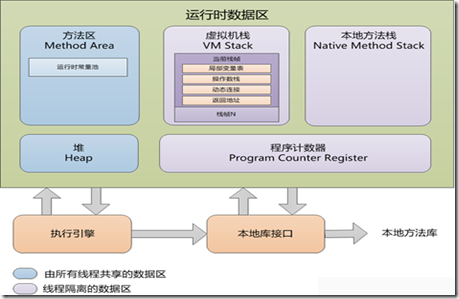
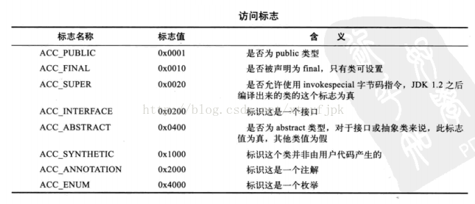
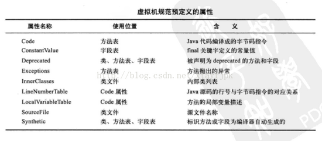
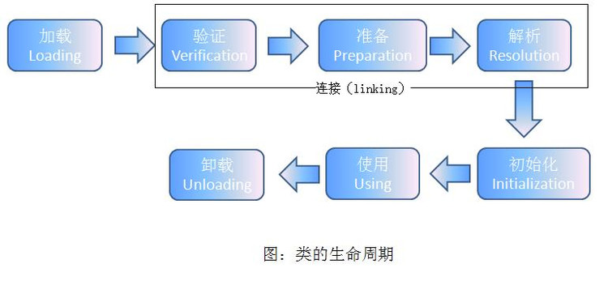
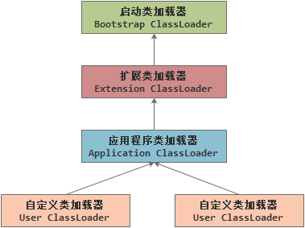

java运行原理
开发环境
1、 JDK（java development kit）
我们可以把java程序设计语言、java虚拟机和java API类库这三个部分统称为JDK，是支持java程序开发的最小环境。
2、 JRE（java run environment）
我们可以把java API类库中的java SE API子集和java虚拟机这两部分统称为JRE，是支持java程序运行的标准环境。
3、 java的发展历史
java虚拟机
java内存

- 程序计数器（program counter register）
是一块较小的内存空间，它可以看作是当前线程所执行字节码的行号指示器。字节码解释器工作时就是通过改变这个计数器的值来选取下一条需要执行的字节码指令、分支、循环、跳转、异常处理、线程恢复等基础功能都需要依赖这个计数器来完成。
JVM的多线程时通过线程轮流切换并分配CPU执行时间的方式来实现的，在任何一个确定的时刻，一个处理器都只会执行一条指令。因此为了线程切换后能恢复到正确的执行位置，每条线程都需要有一个独立的程序计数器，各个线程之间的计数器互不影响，独立存储，我们称这类内存区域为“线程私有”的内存。如果正在执行的是native发放，这个计数器值则为空（undefined），此内存区域是唯一一个在java虚拟机规范中没有规定OutOfMemoryError情况的区域。
虚拟机栈
虚拟机栈描述的是java方法执行的内存模型，每个方法在执行的同时都会创建一个栈桢用于存储局部变量表、操作数栈、动态链接、方法出口等信息。本地方法栈
本地方法栈和虚拟机栈所发挥的作用是非常相似的，它们的区别不过是虚拟机栈为虚拟机执行java方法服务，而本地方法栈则为虚拟机使用到的native方法服务，有些虚拟机会把本地方法栈合并到虚拟机栈。java堆
java堆是java虚拟机所管理内存中最大的一块，他是线程共享的，在虚拟机启动时创建。此内存区域的唯一目的就是存放对象实例，也是GC垃圾收集管理的主要区域（也被称为GC heap）。方法区
方法区是线程共享的内存区域，他被用于存储已被虚拟机加载的类信息、常量、静态变量和即时编译后的代码等数据。运行时常量池（runtime constant pool）
运行时常量池是方法区的一部分。class文件除了有类的版本、字段、方法、接口等描述信息外。还有一项信息时常量池，用于存放编译期生成的各种字面量和符号引用。
class文件结构
class文件的结构不像XML等描述语言，由于它没有任何分隔符号，所以无论是顺序还是数量，甚至于数据存储的字节序这样的细节都是被严格限定的，哪个字节代表什么含义，长度多少，先后顺序如何都不允许改变。
魔数和class版本
每个class文件的头4个字节成为魔数（Magic Number），它的唯一作用是确定这个文件是否为一个能被虚拟机接受的class文件。魔数相对于文件扩展名相对安全，这也是为什么选用魔数的原因。class文件的魔数是“0xCAFFBABE”，在java还是Oak的时候就被确定下来了。
紧接着魔数的4个字节存储的是class文件的版本号，第5、6个字节是次版本号（Minor Version），第7、8个字节是主版本号（Major Version）。java的版本号是从45开始的，JDK1.1之后每个大版本发布，主版本向上加一，并且向下兼容，不能向上兼容。
常量池
紧接着主版本号之后是常量池入口，常量池可以理解为class文件之中的资源仓库，它是class文件接口中于其它项目关联最多的数据类型，也是占用class文件空间最大的数据项目之一。常量池中主要存放两大类常量：字面量（Literal）和符号引用（Symbolic Reference）。访问标志
在常量池后面是2个字节的访问标志，这个标志的作用是识别一些类或接口层次的访问信息，包括：这个class是类还是接口；是否定义为public类型；是否定义为abstract类型；如果是类的话是否声明为final等。（0x0001|0x0002=0x0021）
类索引、父类索引和接口索引集合
class文件中由这三项来确定这个类的继承关系，类索引用于确定这个类的全限定名，父类索引用于确定这个类的父类的全限定名，接口索引就是用来描述这个类实现了哪些接口。字段表集合
字段表（field info）用于描述接口或者类中声明的变量。字段包括类级变量和实例级变量，但不包括在方法内部声明的局部变量。字段表集合中不会列出超类或者父接口中继承而来的字段，但有可能列出原本java代码之中不存在字段。方法表集合
如字段表一样，class文件用方法表存储对方法的描述。如果方法表在子类中没有被重写，方法表集合中就不会出现来自父类的方法信息。但有可能出现由编译器自动添加的方法，最典型的便是类构造器“
”方法和实例构造器“ ”方法。 在java语言中，要重载（overload）一个方法，除了要与原方法具有相同的简单名称之外，还要求必须拥有一个与原方法不同的特征签名，特征签名就是一个方法中各个参数在常量池中的字段符号引用的集合，也就是因为返回值不包含在特征签名中，所以java语言里是无法仅仅依靠返回值来对已有的方法进行重载的。
属性表集合
在class文件，字段表和方法表都可以携带自己的属性表集合，以用于描述某些场景专有的信息。
字节码指令［待补全］
java文件运行
类从被加载到虚拟机内存开始，到卸载出内存为止，它的整个生命周期包括：加载（loading）、验证（verification）、准备（preparation）、解析（resolution）、初始化（initialization）、使用（using）和卸载（unloading）7个阶段。

加载、验证、准备、初始化和卸载这5个阶段的顺序是确定的，类的加载过程必须按照这样的顺序按步就按地开始。而解析阶段则不一定：它在某些情况下可以在初始化阶段之后再开始，这是为了支持java的运行时绑定。
加载
加载主要完成以下三件事：- 通过一个类的全限定名来获取此类的二进制字节流，可以加载zip、jar和网络数据流等。
- 将这个字节流所代表的静态存储结构转化为方法区的运行时数据结构。
- 在内存中生成一个代表这个类的java.lang.Class对象为方法区这个类的各种数据的访问入口。
验证
验证是连接的第一步，这一阶段的目的是为了确保class文件的字节流中包含的信息符合当前虚拟机的要求，并且不会危害虚拟机自身安全。主要包括文件格式验证，例如魔数是否为0xCAFFBABE；元数据验证，例如这个类是否具有父类，除了Object之外的类都应有父类；字节码验证，主要是确保程序语义是否合法、符合逻辑等；符号引用验证，例如private修饰的属性是否只被当前类引用。准备
准备阶段是正式为类变量分配内存并设置初始值的阶段，这些变量的内存都将在方法区中进行分配。public static int value=123，此时初始值为0。123赋值动作将在类初始化的方法执行。 解析
解析阶段是虚拟机将常量池内的符号引用替换为直接引用的过程。- 类和接口的解析
- 字段解析
- 类方法解析
- 接口方法解析
初始化
初始化阶段是类加载的最后一步，前面的类加载过程中，除了在加载阶段用户应用程序可以通过自定义类加载器参与之外，其余动作都与虚拟机主导。到了初始化阶段，才真正开始执行类中定义的java程序代码。
clinit()方法是由编译器自动收集类中所有类变量的赋值动作和静态语句快中的语句合并产生的。编译器收集的顺序是有语句在源文件中出现的顺序所决定的，静态语句块中只能访问到定义在静态语句块之前的变量，定义在它之后的变量，在前面的静态语句块可以赋值，但是不能访问。
clinit()方法与类的构造函数不同，他不需要显式的调用父类的构造器，虚拟机会保证在子类的
()方法之前。父类的 ()方法已经执行完毕。 clinit()方法对于类和接口不是必需的，如果一个类中没有静态语句块，也没有对变量的赋值操作，那么编译器可以不为这个类生成
()方法。
卸载
类加载器
双亲委派机制
虚拟机设计团队把类加载阶段中的“通过一个类的全限定名来获取描述此类的二进制字节流”这个动作放到java虚拟机外部去实现，以便让应用程序自己决定如何去获取所需的类。实现这个动作的模块成为“类加载器”。
对于任意一个类，都需要由加载它的类加载器和这个类本身一同确定其在java虚拟机中唯一性，每一个类加载器都拥有一个独立的类名称空间，两个类只有在同一个类加载器加载的前提下才是“想等”的。java虚拟机通过双亲委派模型实现类“相等”的机制。

虚拟机字节码执行［待补全］
注：本文内容引用了周志明的《深入理解Java虚拟机》。